Refractory
In the ceramic industry, refractory materials are those that can withstand a high temperature without deforming or melting. Or can be sintered into super materials.
Key phrases linking here: refractory - Learn more
Details
In ceramics, the term “refractory” refers to the ability of a material to withstand high temperatures without melting, deforming, or losing structural integrity. In practical terms, for traditional pottery, it usually means “does not melt at typical kiln temperatures.”
The first refractories most potters encounter are kiln shelves and firebricks. Many common ceramic raw materials are also inherently refractory. For example, kaolin, ball clay, and quartz all resist melting well beyond normal firing ranges. However, refractoriness is not an absolute property: some materials that are refractory on their own can act as fluxes when combined with others. Calcium carbonate, dolomite, and talc are common examples—they contribute to melting in a glaze or body despite being refractory individually.
Traditional clay bodies are a balance of refractory and fluxing components. The refractory particles form a structural “skeleton,” while the fluxes melt during firing to create a glassy phase that fills spaces and bonds the structure. In contrast, many high-tech ceramics rely almost entirely on refractory materials. In these systems, bonding occurs primarily by sintering - particles fuse at contact points without forming significant glass. With sufficiently fine particle sizes, dense packing, and high firing temperatures, these materials can achieve exceptional strength.
Refractoriness also plays a critical role in color systems. While many metallic oxides melt readily, others, such as chrome and rutile, are highly refractory. Even in highly fluxed systems, they resist dissolution and help maintain stable color. Ceramic stains are engineered blends of colorants and stabilizers designed specifically to remain refractory enough to stay suspended in a glaze melt without dissolving into it.
Fireclays are commonly associated with refractory applications. Their stability at high temperature comes from low levels of fluxing oxides (e.g., K₂O, Na₂O, CaO, MgO). They are often coarser and less refined than kaolins, but offer a useful combination of refractoriness, plasticity, tolerance for grog addition, and low cost. By comparison, kaolins are typically purer and more refractory, though less plastic.
Beyond traditional ceramics, the term refractories also refers to a wide range of industrial materials and products engineered to withstand extreme environments. These include bricks, castables, fibers, boards, and insulating modules made from materials such as alumina, zirconia, and silicon carbide. Each system is tailored for specific properties—thermal expansion, conductivity, density, mechanical strength, or dielectric behavior.
Modern refractory technology extends far beyond what most potters encounter. Advanced ceramics based on high-purity oxides like alumina and zirconia can operate at temperatures exceeding 2000C, while non-oxide systems go even further. Research into ultra-high-temperature ceramics, such as hafnium carbide and zirconium diboride composites, has demonstrated materials capable of surviving above 3000C.
“Refractories” can also refer to advances in processing. Careful control of particle size, shape and size distribution can enable very dense packing during pressing. The result is minimal firing shrinkage and high sintered strength. Precision forming methods—including machining and injection molding—now make it possible to produce refractory components with exceptional dimensional accuracy, surface quality, and performance.
Related Information
Firing shrinkage variation between various clays
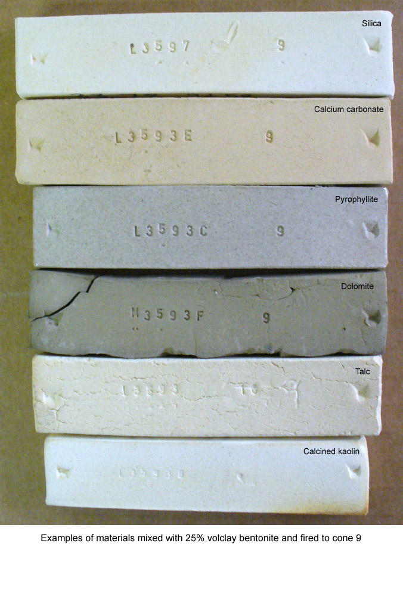
This picture has its own page with more detail, click here to see it.
Example of various materials mixed 75:25 with volclay 325 bentonite and fired to cone 9. Plasticities and drying shrinkages vary widely. Materials normally acting as fluxes (like dolomite, talc, calcium carbonate) are refractory here because they are fired in the absence of materials they react normally with.
Pine Lake fireclay lab test bars
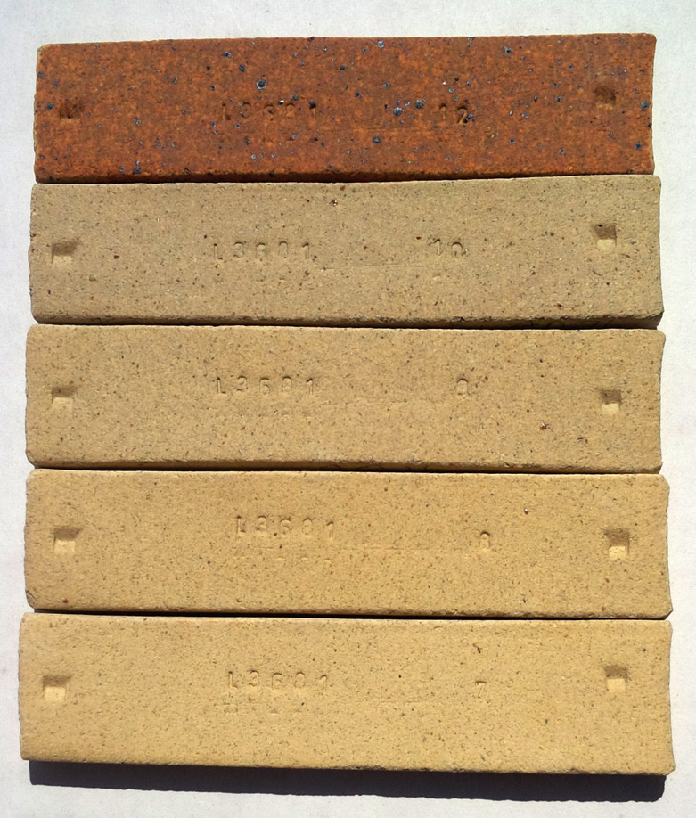
This picture has its own page with more detail, click here to see it.
Fired to cone 10R (top) and 7,8,9,10 oxidation (from bottom to top). A refractory material.
IMCO 400 Fireclay fired bars
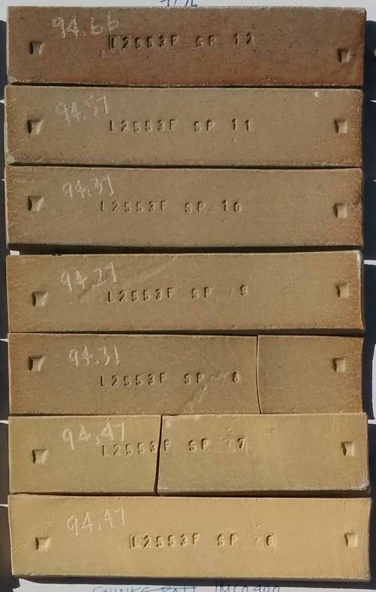
This picture has its own page with more detail, click here to see it.
Cone 10R top, 11 oxidation and downward below that. This material, although called a "fireclay", is more fine grained and much more vitreous than what would normally be considered a refractory fireclay. Is it similar to Lincoln Fireclay (from California).
Calcium carbonate and dolomite are refractory when used pure
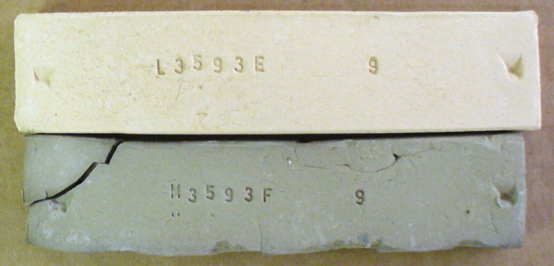
This picture has its own page with more detail, click here to see it.
Examples of calcium carbonate (top) and dolomite (both mixed with 25% bentonite to make them plastic enough to make a test bars). They are fired to cone 9. Both bars are porous and refractory, even powdery. However, put either of these in a mix with other ceramic minerals and they interact strongly to become fluxes.
The difference between vitrified and sintered
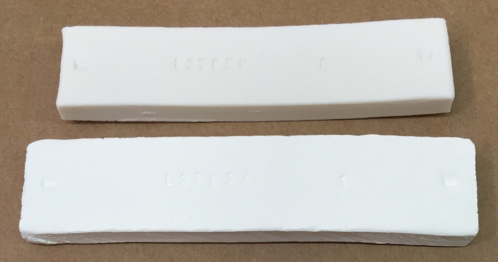
This picture has its own page with more detail, click here to see it.
The top fired bar is a translucent porcelain (made from kaolin, silica and feldspar). It has zero porosity and is very hard and strong at room temperature (because fibrous mullite crystals have developed around the quartz and kaolinite grains and feldspar silicate glass has flowed within to cement the matrix together securely). That is what vitrified means. But it has a high fired shrinkage, poor thermal shock resistance and little stability at above red-heat temperatures. The bar below is zirconium silicate plus 3% binder (VeeGum), all that cements zircon ceramics together is sinter-bonds between closely packed particles (there is some glass development from the Veegum here). Yet it is surprisingly strong, it cannot be scratched with metal. It has low fired shrinkage, low thermal expansion and maintains its strength and hardness at very high temperatures.
The difference in fired character between kaolin and ball clay at cone 10R
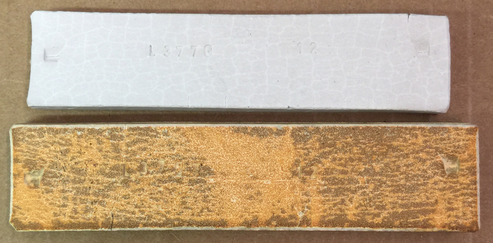
This picture has its own page with more detail, click here to see it.
The top one is EP Kaolin, the bottom one is Old Hickory M23 Ball Clay (these materials are typical of their respective types). These materials have low alkali contents (especially the kaolin), this lack of flux means they are theoretically highly refractory mixes of SiO2 and Al2O3. It is interesting that, although the kaolin has a much larger ultimate particle size, it is shrinking much more (23% total vs. 14%). This is even more unexpected since, given that it has a lower drying shrinkage, and should be more refractory. Further, the kaolin has a porosity of 0.5% vs. the ball clay's 1.5%. The kaolin should theoretically have a much higher porosity? What is more, both of these values are unexpectedly low. This can partly be explained by the particle packing achieved because of the fine particle size. Despite these observations, their refractory nature is ultimately proven by the fact that both of these can be fired much higher and they will only slowly densify toward zero porosity.
Why pure stain powders make poor inks, slips, underglazes and overglazes
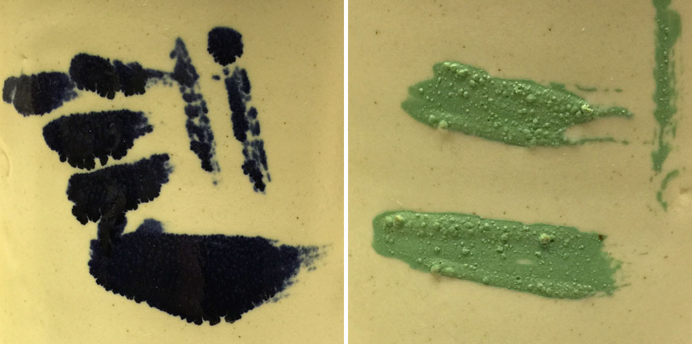
This picture has its own page with more detail, click here to see it.
On the left are pure blue stain brush strokes, on the right are green ones (both painted over a glaze). Clearly, the green is refractory, stiffening the glaze enough to trap bubbles and sit on the surface as a dry, unmelted layer. The blue is the opposite, melting and bleeding profusely into the glaze. Under the glaze, these problems would be magnified (the blue bleeding more, the green causing crawling and blistering). Stains are not ceramic, they are ceramic additives. Stains are not safe for direct food contact. Stains are expensive. Stains don't suspend in water, paint poorly and dry as a lose powder. These stains each need to be added, as a minor percentage, to a ceramic painting medium (one with CMC gum and a mix of ceramic materials tailored to melt to the desired degree and have a compatible chemistry for develop the color (as per manufacturer guidelines).
How do metal oxides compare in their degrees of melting?

This picture has its own page with more detail, click here to see it.
These metal oxides have been mixed with 50% Ferro frit 3134 and fired to cone 6 oxidation. Chrome and rutile have not melted, copper and cobalt are extremely active melters, frothing and boiling. Cobalt and copper have crystallized during cooling. Manganese has formed an iridescent glass.
An alumina mini proof-of-concept home-made kiln shelf (5 mm thick)
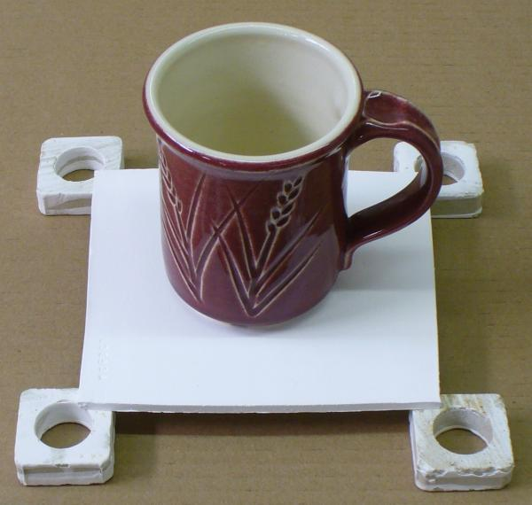
This picture has its own page with more detail, click here to see it.
It is made from 96.5% calcined alumina (plus 3.5% Veegum to provide plasticity for forming). At cone 6, with no prior firing to a higher temperature, a 5mm thick slice can support a piece like this. Of course, prefiring to a higher temperature for extra hot strength is a better idea. A caution: This is just typical sintered alumina, it does not have nearly the thermal shock resistance that fully crystallized tabular alumina has.
Each Mason stain has its own personality for coloring the body
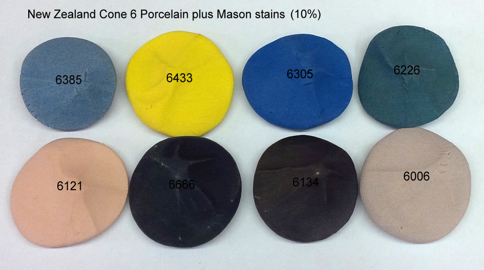
This picture has its own page with more detail, click here to see it.
These Mason stains make the porcelain more refractory, but some more so (e.g. 6385, 6226). Some do not develop the intended color (e.g. 6006 pink, it is a glaze stain only). Some need a higher concentration (e.g. 6121, 6385). Some need a lower concentration (e.g. 6134). Some do not impart a homogeneous color (e.g. 6385). The data sheets from the stain manufacturer normally make it clear which of their stains are suitable in bodies. But it is up to you to test concentrations needed to get the desired color and what adjustments to the porcelain are needed to compensate its degree of vitrification in response to the effects of the stain.
Can you make things from zircopax? Yes.

This picture has its own page with more detail, click here to see it.
Only 3% Veegum will plasticize Zircopax (zirconium silicate) enough that you can form anything you want. It is even more responsive to plasticizers than calcined alumina is and it dries very dense and shrinkage is quite low. Zircon is very refractory (has a very high melting temperature) and has low thermal expansion, so it is useful for making many things (the low thermal expansion however does not necessarily mean it can withstand thermal shock well). Of course you will have to have a kiln capable of much higher temperatures than are typical for pottery or porcelain to sinter it well.
Throw Zircopax on the potters wheel. Just add VeeGum.

This picture has its own page with more detail, click here to see it.
These crucibles are thrown from a mixture of 97% Zircopax (zirconium silicate) and 3% Veegum T. The consistency of the material is good for rolling and making tiles but is not quite plastic enough to throw very thin (so I would try 4% Veegum next time). It takes alot of time to dewater on a plaster bat. But, these are like nothing I could make from any other material. They are incredibly refractory (fired to cone 10 they look like bisqued porcelain). However I have had mixed results for thermal shock resistance.
My first zircopax kiln shelf
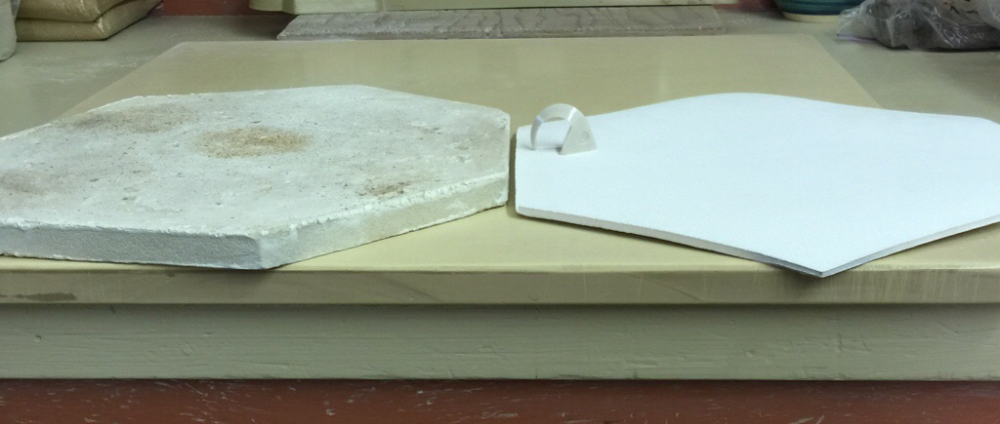
This picture has its own page with more detail, click here to see it.
It is 5 mm thick (compared to the 17mm of the cordierite one). It weighs 650 grams (vs. 1700 grams). It will perform at any temperature that my test kiln can do, and far in excess of that. It is made from a body I slurry up (80% Zircopax Plus, 16.5% 60-80 Molochite grog, 3.5% Veegum T). The body is plastic and easy to roll and had 4.2% drying shrinkage at 15.3% water. The shelf warped slightly during drying (I should have dried it between sheets of plasterboard). Firing at cone 4 yielded a shrinkage of 1%. Notice that cone on the shelf: It has not stuck even though no kiln wash was used! Zircopax is super refractory! This is sinter bonded, so the higher the temperature you can fire the stronger it will be. Although it would be very hard to make full 18 or 22-inch shelves for larger kilns, smaller ones designed to "network" would enable a tighter load of ware with a much lower shelf-to-ware weight ratio (especially using my own lightweight posts). Like alumina, this does not have the thermal shock resistance of cordierite, uneven heating can crack these.
An electric kiln half shelf that costs $500!
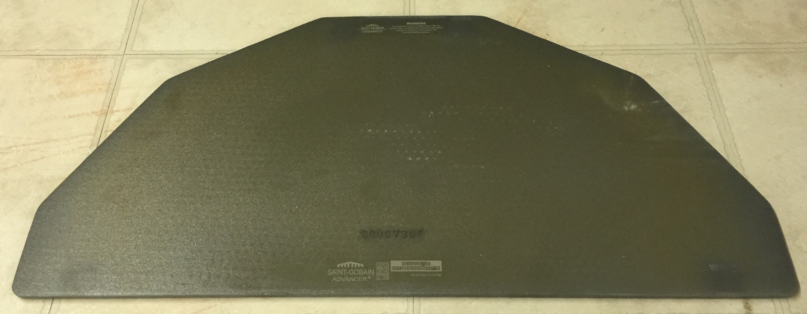
This picture has its own page with more detail, click here to see it.
This Advancer Nitride-bonded Silicon Carbide shelf is 26 inches wide (by 1/4 inch thick) weighs 9 lbs. These are incredible durable and strong. However there are cautions to their use. They can act as an electrical conductor so must not contact elements and should not be used in kilns with unpinned elements protruding from grooves. They must be stored in a dry place to prevent moisture penetration (which can cause a steam explosion during heatup). The company has a recommend drying schedule if shelves do absorb moisture (the application of kiln wash is not considered a prolonged exposure and is OK).
Links
| Typecodes |
Refractory
Materials that melt at high temperatures. These are normally used for kiln bricks, furniture, etc. or for ceramics that must withstand high temperatures during service. |
| Glossary |
Flux
Fluxes are the reason we can fire clay bodies and glazes in common kilns, they make glazes melt and bodies vitrify at lower temperatures. |
| Glossary |
Fireclay
A clay that withstands fire. In the ceramics industry, clays that are resistant to deforming and melting at high temperatures are called fireclays. Kiln bricks are often made from fireclay. |
| Glossary |
Ceramic
Ceramic materials are among the hardest and most heat resistant materials known. Ceramics spans the spectrum from ancient terra cotta to modern hi-tech materials. |
| Glossary |
Sintering
A densification process occurring within a ceramic kiln. With increasing temperatures particles pack tighter and tighter together, bonding more and more into a stronger and stronger matrix. |
| Glossary |
Non Oxide Ceramics
|
| Glossary |
Firebrick
In the ceramic industry, these are the bricks used to build kilns. This term grows out of their ability to withstand high temperatures that would melt or deform structural bricks. |
| Glossary |
Cordierite Ceramics
Cordierite is a man-made refractory low thermal expansion crystalline solid that forms at very high temperatures (in the right mix of kaolin and talc). |
| Materials |
Calcined Alumina
A high-purity Al2O3 used in technical ceramics, refractories, glazes, and bodies for its extreme hardness, high-temperature strength, and chemical stability. |
| Materials |
Steatite
|
| Materials |
Cordierite
|
| Materials |
Zircon
|
| URLs |
https://www.morganadvancedmaterials.com/en-gb/what-we-do/thermal-ceramics/
Morgan Advanced Materials - Thermal Ceramics |
| URLs |
https://www.youtube.com/watch?v=VTzKIs19eZE
How to make a small electric arc furnace |
| URLs |
https://www.ebay.com/str/hightemprefractorystore?_trksid=p4429486.m3561.l161210
How to make lightweight ceramic refractories - The answer is on a chatbot and ebay.com. Here is an example of the chatbot output. There is much useful info here, just apply some common sense. There are a few proven ways to make lightweight alumina refractories (insulating firebricks, castables, boards, and linings) for high-temperature furnaces. Below I’ll give you the principles, tradeoffs, a couple of concrete workshop recipes (one insulating castable, one fiber board / lightweight block), step-by-step processing, expected properties, and safety notes so you can choose a route that fits your furnace temperature and mechanical needs. Quick overview — design choices & tradeoffs What “lightweight” means: lower bulk density (≈0.3–1.6 g/cm³) vs dense refractories (2.4–3.9 g/cm³). Lower density → much lower thermal conductivity and heat stored, but reduced mechanical strength, abrasion resistance, and sometimes chemical resistance. Max service temperature: depends on alumina source and binder. For service ≲1400–1500°C you can use calcium-aluminate cements or phosphate binders; for 1500–1750°C you need high-alumina aggregates (tabular/fused alumina) and binders that don’t soften (or rely on ceramic bonding after high temp). Lightweighting strategies: add ceramic hollow spheres / alumina bubbles (preformed, good high-temp performance), use organic sacrificial pore formers (EPS beads, starch, sawdust) and burn them out, leaving porosity, use expanded natural minerals (perlite, vermiculite) — lower cost but lower max temp, use ceramic fiber (Al₂O₃–SiO₂ blankets / fibers) or fiber reinforcement for boards, produce foamed castables (gas-forming chemical foaming agents or mechanical foaming / gelcasting). Binders: phosphate (acidic) binders, calcium aluminate cement (CAC), or refractory colloidal silica/sols. Choice affects setting, strength, and max temp. For highest temps use fusion of alumina aggregates and minimal low-melting binders. Recipe A — Insulating alumina castable (workshop scale) Good for furnace linings up to ~1500°C (adjustable). Uses alumina bubbles for low density. Typical properties target: bulk density ≈ 0.6–1.2 g/cm³, thermal conductivity low, compressive strength moderate. Ingredients (by weight, example batch ~10 kg solids): Tabular/fused alumina coarse (T-64 / 90 µm–1 mm) — 3.5 kg Reactive alumina (fine, 1400°C choose fibers and binders rated for that temp (some organic binders will burn out). Result: flexible or rigid board with very low density (0.1–0.8 g/cm³) and very low thermal conductivity, excellent for kilns as backup insulation but mechanically fragile. Alternate / low-cost approaches Expanded perlite / vermiculite + high-alumina binder: cheap and easy but max temp reduced (~1200–1300°C typical). EPS or starch sacrificial pore former: mix polymer beads into mix, cast, then burn beads out — creates lots of porosity but must control pore size and avoid collapse during drying/firing. Foamed castables: chemically foam the slurry (hydrogen evolution, surfactants) for very low density; requires careful control and stabilizers. Processing & firing schedules (typical guidance) Drying: slow. 20–24 h at 60–100°C, increasing slowly to avoid cracks. Organics burnout: hold at 300–500°C to remove organics. Ramp rate 50°C/h or slower if thick sections. First high-temp exposure / sinter: for phosphate/CAC systems you may not need full sinter; otherwise consider a 1200–1600°C soak if using reactive alumina to densify bonding (but this reduces porosity/insulation). Ramp rates: controlled—avoid >200°C/h through critical ranges where bound water evolves (100–600°C). For thick/large items slow to prevent internal cracking. Expected properties & numbers (approximate) Low-density insulating castable with alumina bubbles: density 0.6–1.3 g/cm³, thermal conductivity 0.2–0.8 W/m·K (depending on temp), compressive strength 2–20 MPa. Service temp up to ~1500°C if components are high-alumina. Fiber boards: density 0.1–0.8 g/cm³, very low conductivity 0.05–0.4 W/m·K, low strength, service temp depends on fiber chemistry (1400–1600°C common). (These are ballpark figures — exact values depend on formulation and porosity.) Practical tips & troubleshooting Protect hollow spheres: handle gently; they’re fragile — add them late and stir minimally. Avoid steam blowouts: dry slowly and vent molds; excess water in thick sections causes spalling. Watch binder choice: phosphate binders set fast and give good green strength; CAC needs moist cure. For very high temp, minimize volatile/low-melting phases. Thermal shock resistance: add fibers or small amounts of mullite aggregates to improve. Quality control: cut small test specimens and measure bulk density, cold-crush strength, and do a first heat cycle to check for cracking or collapse. Safety Dust control: alumina and reactive alumina are very fine powders — use NIOSH P2/P3 or N95+ respirator, local exhaust ventilation, dust containment. Binders: some phosphate solutions are acidic — handle with gloves/eye protection. CAC dust is alkaline; handle accordingly. Burnout fumes: burning organics (EPS, binders) can release hazardous vapors — ensure proper ventilation or use a controlled kiln with venting. High-temp hazards: standard kiln/furnace safety — hot surfaces, insulation handling precautions. Final notes & suggestions If you need a specific target (service temp, desired density, geometry, mechanical load), tell me that and I’ll give a tighter recipe and precise binder choices and firing schedule. Sourcing: alumina bubbles and tabular alumina are specialty materials — prices vary; ceramic fiber and colloidal silica are more widely available. Small-scale testing: always make small test blocks (vary bubble content 10–40 vol%) to find the density/strength balance that works for your furnace. |
| Minerals |
Steatite
Talc is also called steatite (it is a magnesium silicate hydrate). It is the main component of soaps |
 PayPal | No tracking, No ads, No paywall, No transient content! Just organized, concise information constantly updated and improved. Was this helpful? Consider supporting me. |
| By Tony Hansen Follow me on        |  |
Got a Question?
Buy me a coffee and we can talk 

https://digitalfire.com, All Rights Reserved
Privacy Policy